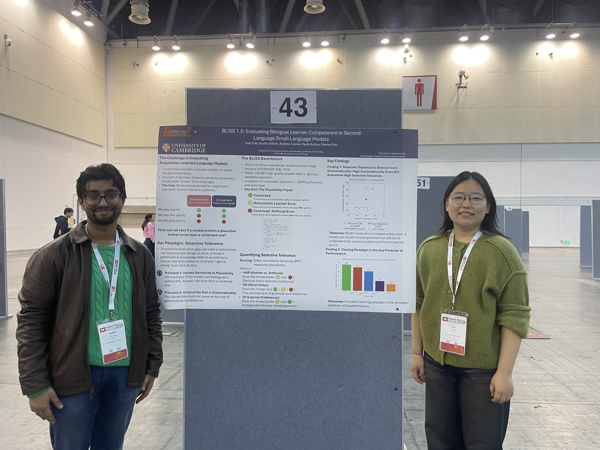

BLiSS: Evaluating Bilingual Learner Competence in Second Language Small Language Models
Learners of a second language do not simply fail at the target grammar; they build a systematic grammar of their own. BLiSS is a benchmark for asking whether small models trained as second-language learners do the same.

The BabyLM Shared Task has increasingly pushed beyond English, and once it does, a richer set of acquisition scenarios comes into view: code-switching, simultaneous and successive bilingualism, and second language acquisition.1Gao, Salhan, Caines, Buttery & Sun. BLiSS: Evaluating Bilingual Learner Competence in Second Language Small Language Models, BabyLM Workshop, EMNLP 2025. Small language models that simulate these settings are an attractive testbed, but we lacked a way to evaluate their formal competence as learners. Standard language-model benchmarks measure how close a model gets to native grammaticality. They say very little about the structured, in-between grammar that characterises an actual second-language learner.
Interlanguage as the object of study
The idea our benchmark is built on comes from second-language acquisition research: interlanguage. A learner's productions are not random errors scattered around the target. They form their own system, with regularities that reflect where the learner is on the path from a first language to the second. If a cognitively inspired second-language model is doing anything like acquisition, its behaviour should show these interlanguage patterns rather than either perfect target grammar or noise.
BLiSS, a Benchmark of Learner Interlingual Syntactic Structure, is our attempt to make that measurable. It consists of 1.5 million minimal pairs derived from error-correction sentence pairs in learner corpora.2The pairs are built from naturalistic learner-corpus data rather than synthetically generated. See the ACL Anthology entry, pages 160–174. Each pair contrasts a learner form with its correction, which lets us probe whether a model prefers the systematic learner variant in ways that mirror real interlanguage, rather than only checking whether it prefers the fully corrected sentence.
Why the naturalistic source matters
Grounding the benchmark in learner corpora is a deliberate choice. The systematic patterns of interlanguage are exactly what standard evaluations overlook, because those evaluations are designed around native grammaticality. By drawing minimal pairs from attested learner productions and their corrections, BLiSS keeps the phenomena that matter for studying second-language competence, and it gives a linguistically motivated, controlled way to measure the interlanguage competence of second-language small language models across different training configurations.
My interest in this project sits at the meeting point of small-model pretraining and acquisition research. If we want to argue that a model trained under human-scale data constraints is a model of learning, and not just a smaller performance engine, we need evaluations that are sensitive to how humans actually learn a second language. BLiSS is a step toward that: a benchmark that treats the learner's own grammar as the thing worth measuring, so that progress on second-language small language models can be assessed on terms borrowed from the study of human learners.